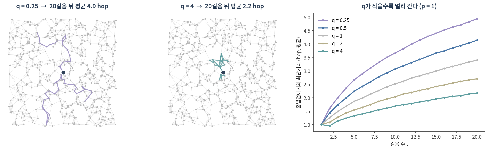
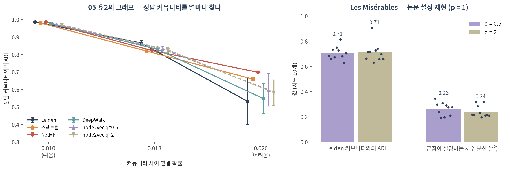

11. 그래프 임베딩
이 챕터를 마치면 다음을 할 수 있습니다.
- 노드 임베딩을 encoder–decoder로 설명하고, ⚠️ 유사도를 무엇으로 정의하느냐가 결과를 정한다는 것을 말할 수 있다
- DeepWalk·node2vec의 절차(랜덤워크 → word2vec)를 설명하고, p·q가 걸음을 어떻게 바꾸는지 실측으로 말할 수 있다
- 랜덤워크 임베딩이 행렬 분해이며 🔗 05의 스펙트럴 방법과 같은 뿌리라는 것을 설명할 수 있다
- ⚠️ 임베딩 좌표 하나하나에는 의미가 없고 노드 사이의 관계만 의미가 있다는 것을 숫자로 보일 수 있다
- 얕은 임베딩의 한계를 들고, 12의 그래프 신경망이 왜 필요한지 말할 수 있다
🤔 생각해볼 질문
PPI 네트워크의 유전자 2만 개를 각각 128차원 벡터로 바꿨다는 논문이 있습니다. TP53 벡터의 12번째 숫자는 무엇을 뜻할까요?
1. 노드를 벡터로 🪢
1) 왜 벡터인가
- 08·09의 모델은 벡터를 입력으로 받습니다. 그래프 위의 노드를 분류하거나 군집하려면 노드마다 벡터가 필요합니다
- Part 1에서는 그 벡터를 사람이 골랐습니다 — 차수, 뭉침 계수, 중심성 (🔗 03 §3)
- 노드 임베딩은 그 특징을 학습합니다. 08에서 은닉층이 상호작용 특징을 스스로 만든 것과 같은 발상입니다
2) encoder–decoder 틀
encoder: 노드 v → 벡터 z_v decoder: z_u · z_v ≈ 유사도(u, v)
- encoder — 가장 단순한 형태는 표 조회입니다. 노드 수 × d 크기의 행렬 Z에서 v번째 행을 꺼냅니다 (“얕은 임베딩”)
- decoder — 두 벡터의 내적이 두 노드의 유사도를 재현하도록 Z를 학습합니다 (Hamilton et al. 2017)
- ⚠️ 그러므로 “유사도”를 어떻게 정의하느냐가 전부입니다
| 유사도의 정의 | 뜻 | 대표 방법 |
|---|---|---|
| 엣지가 있다 | 바로 이웃이면 비슷하다 | 라플라시안 고유맵 (🔗 05 §4) |
| 짧은 랜덤워크에서 함께 나타난다 | 몇 걸음 안에 자주 만나면 비슷하다 | DeepWalk, node2vec |
| 연결 구조의 모양이 같다 | 멀리 있어도 같은 역할이면 비슷하다 | struc2vec (Ribeiro et al. 2017) |
- 💡 01에서 “엣지는 선택이었다”고 했습니다. 임베딩에서는 “비슷하다”의 정의가 그 선택입니다
2. DeepWalk와 node2vec 🚶
1) 랜덤워크를 문장으로
- word2vec — 문장 안에서 가까이 나오는 단어는 비슷한 벡터를 갖게 학습합니다 (Mikolov et al. 2013). 은닉층 하나짜리 얕은 신경망입니다
- DeepWalk(Perozzi et al. 2014)의 발상: 노드에서 출발한 랜덤워크를 문장으로, 노드를 단어로 보자
- 노드마다 랜덤워크를 r번, 길이 l로 걷는다 (이 챕터: 10번 × 40걸음)
- 걸음 안에서 창 k 이내에 함께 나온 노드 쌍 = “비슷한 쌍”. 무작위로 뽑은 노드 = “비슷하지 않은 쌍” (negative sampling)
- 비슷한 쌍의 내적은 크게, 무작위 쌍의 내적은 작게 되도록 Z를 경사하강으로 학습 (skip-gram)
- 🔗 06 §2의 RWR과 같은 랜덤워크입니다. RWR은 걸음의 도착 확률을 점수로 썼고, DeepWalk는 걸음에서 함께 나타나는 빈도를 벡터로 압축합니다
2) node2vec — 걸음에 성향을 준다

방금 t에서 v로 왔을 때, 다음 노드 x로 갈 가중치 (Grover & Leskovec 2016):
| x는 | 가중치 | 파라미터의 뜻 |
|---|---|---|
| 방금 떠나온 t | 1/p | p (return) — 작으면 왔던 곳으로 자주 돌아감 |
| t의 이웃 | 1 | — |
| t에서 더 먼 노드 | 1/q | q (in-out) — 작으면 바깥으로 뻗어 나감(DFS 성향), 크면 근처를 맴돎(BFS 성향) |
- p = q = 1이면 DeepWalk의 균일한 랜덤워크입니다
- 실측 (그림 오른쪽) — 20걸음 뒤 출발점과의 평균 거리: q = 0.25에서 4.94 hop, q = 1에서 3.40, q = 4에서 2.17
- → q는 임베딩이 “얼마나 넓은 이웃”을 비슷하다고 볼지를 정하는 손잡이입니다
3) ⚠️ p, q의 교과서적 해석은 재현되지 않았다
- node2vec 논문은 Les Misérables 등장인물 그래프에서 q = 0.5는 커뮤니티를, q = 2는 구조적 역할을 잡는다고 보였습니다 (d = 16, k-means)
- 논문에 적힌 설정(d = 16, 노드마다 걸음 10 × 80, 창 10, 1 epoch, p = 1)으로 k-means 6개 군집을 만들어 시드 10개로 재봤습니다
| q = 0.5 | q = 2 | 기대했던 방향 | |
|---|---|---|---|
| Leiden 커뮤니티와의 ARI | 0.705 ± 0.053 | 0.711 ± 0.077 | q = 2에서 낮아져야 |
| 군집이 설명하는 차수 분산 (η², 역할의 대리 지표) | 0.263 ± 0.052 | 0.241 ± 0.046 | q = 2에서 높아져야 |

- ⚠️ 두 설정의 군집은 거의 같았습니다. q = 2가 역할을 더 잡는다는 해석은 이 측정에서는 보이지 않았습니다
- 후속 연구도 기존 노드 임베딩 방법들이 강한 의미의 구조적 역할을 잡지 못한다고 보고했습니다 (Ribeiro et al. 2017). 랜덤워크는 가까운 노드끼리만 함께 나타나므로, 멀리 떨어진 같은 역할의 노드를 가깝게 두기 어렵습니다
- ✅ “이 q는 역할을 잡는다”는 문장을 쓰려면 자기 데이터에서 재보세요. p, q는 🔗 05 §3의 resolution, 🔗 06 §2의 α와 같은 종류의 손잡이입니다
3. 임베딩은 행렬 분해다 🧮
1) 같은 뿌리
- Qiu et al.(2018)은 DeepWalk·LINE·node2vec이 특정 행렬을 암묵적으로 분해하고 있음을 보였습니다. DeepWalk(창 T, 음성 샘플 b)의 경우:
\[ \log\!\left(\frac{\operatorname{vol}(G)}{bT}\left(\sum_{r=1}^{T} (D^{-1}A)^r\right) D^{-1}\right) \]
- D⁻¹A는 🔗 06 §2의 한 걸음 이동 행렬입니다. 1~T걸음 이동 확률을 더해 로그를 씌운 행렬 = “창 T 안에서 함께 나타날 확률”
- 그러니 랜덤워크를 걷고 신경망을 학습하는 대신, 이 행렬을 직접 만들어 SVD해도 됩니다 (NetMF)
- T = 1(바로 이웃만)이면 차수로 정규화한 인접 행렬이 남습니다. 🔗 05 §4의 정규화 라플라시안과 같은 재료이고, 그 고유벡터로 만든 임베딩이 라플라시안 고유맵입니다 (Belkin & Niyogi 2003)
- 💡 즉 스펙트럴 클러스터링 → 라플라시안 고유맵 → DeepWalk → node2vec은 “몇 걸음까지를 이웃으로 볼 것인가”만 다른 한 가족입니다
2) 실측 — 05의 그래프에서
위 그림 왼쪽. 커뮤니티 사이 연결 확률에 따른 정답 커뮤니티와의 ARI:
| 방법 | 무엇을 하나 | 0.010 (쉬움) | 0.018 | 0.026 (어려움) |
|---|---|---|---|---|
| Leiden (🔗 05 §2) | 모듈성 최적화 | 0.985 | 0.865 | 0.532 ± 0.133 |
| 스펙트럴 (🔗 05 §4) | 라플라시안 고유벡터 6개 | 0.980 | 0.819 | 0.659 |
| NetMF | 위 행렬(T = 5)을 SVD | 0.985 | 0.823 | 0.698 |
| DeepWalk | 랜덤워크 + word2vec | 0.978 | 0.830 | 0.548 ± 0.086 |
| node2vec q = 0.5 | 바깥으로 뻗는 걸음 | 0.970 | 0.831 | 0.598 ± 0.093 |
| node2vec q = 2 | 근처를 맴도는 걸음 | 0.969 | 0.826 | 0.582 ± 0.074 |
- 구조가 뚜렷하거나 중간일 때는 여섯 방법이 거의 같습니다 (0.018에서 0.82–0.87)
- 💡 랜덤워크 + 신경망이 새로운 정보를 만든 것이 아닙니다. 같은 그래프 구조를 다른 방식으로 분해한 것입니다
- ⚠️ 가장 어려운 조건의 차이는 조심해서 읽어야 합니다. 임베딩 + k-means에는 정답 개수(6)를 알려줬고, Leiden은 개수를 스스로 정했습니다 (시드 5개 중 한 번은 8개). 비교 조건이 같지 않습니다 (🔗 09 §3)
3) ⚠️ 좌표에는 의미가 없다
같은 그래프(연결 확률 0.018)에 시드만 바꿔 DeepWalk를 두 번 돌렸습니다.
| 두 임베딩 비교 | 값 |
|---|---|
| 같은 번호 좌표끼리의 상관 (32개 좌표의 |r| 평균) | 0.14 |
| 모든 노드 쌍의 코사인 유사도끼리의 상관 | 0.83 |
| k-means 군집끼리의 ARI | 0.92 |
- decoder는 내적(각도)만 봅니다. 공간 전체를 돌려도 내적은 같으므로, 시드가 바뀌면 좌표계가 통째로 돌아갑니다
- → 🤔 질문의 답: TP53 벡터의 12번째 숫자에는 의미가 없습니다. 의미가 있는 것은 “TP53과 가까운 유전자는 누구인가”입니다
- ⚠️ 그러므로 서로 다르게 학습한 두 임베딩(다른 조직, 다른 시점의 네트워크)의 좌표를 직접 비교하면 안 됩니다
- ✅ 보고할 것은 좌표가 아니라 관계(최근접 이웃, 군집, 유사도)이고, 그것도 시드를 바꿔 유지되는지 확인합니다
Colab에서 실행합니다. !pip install -q gensim python-igraph leidenalg 먼저 (90. Colab 환경 설정). 몇 초면 끝납니다.
import numpy as np, networkx as nx
import igraph as ig, leidenalg as la
from gensim.models import Word2Vec
from sklearn.cluster import KMeans
from sklearn.metrics import adjusted_rand_score as ari
G = nx.karate_club_graph()
club = np.array([G.nodes[v]["club"] == "Officer" for v in G], dtype=int) # 실제로 갈라진 두 모임
# ── 1. node2vec 랜덤워크: 직전 노드로 1/p, 직전 노드의 이웃으로 1, 더 먼 곳으로 1/q ──
def walks(G, p=1.0, q=1.0, n_walks=10, length=40, seed=0):
rng = np.random.default_rng(seed)
out = []
for _ in range(n_walks):
for s in rng.permutation(list(G)):
w = [s]
while len(w) < length:
nb = list(G.neighbors(w[-1]))
if len(w) == 1:
w.append(nb[rng.integers(len(nb))]); continue
prev = w[-2]
wt = np.array([1 / p if x == prev else 1.0 if G.has_edge(x, prev) else 1 / q
for x in nb])
w.append(nb[rng.choice(len(nb), p=wt / wt.sum())])
out.append([str(x) for x in w]) # word2vec은 "단어"를 받으므로 문자열로
return out
def node2vec(G, p=1.0, q=1.0, dim=16, seed=0):
m = Word2Vec(walks(G, p, q, seed=seed), vector_size=dim, window=5, min_count=0,
sg=1, negative=5, epochs=5, workers=1, seed=seed) # workers=1이어야 재현됨
return np.array([m.wv[str(v)] for v in G])
def kmeans(Z, k):
Z = Z / np.linalg.norm(Z, axis=1, keepdims=True)
return KMeans(k, n_init=10, random_state=0).fit_predict(Z)
# ── 2. 05의 방법들과 비교: 실제 두 모임을 얼마나 맞히나 ─────────────────
L = nx.normalized_laplacian_matrix(G).toarray()
fiedler = (np.linalg.eigh(L)[1][:, 1] > 0).astype(int) # 05 §4
leiden = np.array(la.find_partition(ig.Graph.from_networkx(G),
la.RBConfigurationVertexPartition, resolution_parameter=1.0,
seed=0).membership) # 05 §2
print(f"피들러 벡터 부호 ARI {ari(club, fiedler):.3f}")
print(f"Leiden ({leiden.max() + 1}개 커뮤니티) ARI {ari(club, leiden):.3f}")
for p, q in [(1, 1), (1, 0.5), (1, 2)]:
Z = node2vec(G, p, q)
print(f"node2vec p={p} q={q:<3} 두 모임 ARI {ari(club, kmeans(Z, 2)):.3f} "
f"Leiden과의 ARI {ari(leiden, kmeans(Z, leiden.max() + 1)):.3f}")
# ── 3. ⚠️ 시드만 바꾸면: 좌표는 달라지고 관계는 남는다 ─────────────────
Za, Zb = node2vec(G, seed=0), node2vec(G, seed=1)
unit = lambda Z: Z / np.linalg.norm(Z, axis=1, keepdims=True)
iu = np.triu_indices(len(Za), 1)
coord_r = np.mean([abs(np.corrcoef(Za[:, j], Zb[:, j])[0, 1]) for j in range(Za.shape[1])])
sim_r = np.corrcoef((unit(Za) @ unit(Za).T)[iu], (unit(Zb) @ unit(Zb).T)[iu])[0, 1]
print(f"같은 번호 좌표끼리 |상관| 평균 {coord_r:.3f} 노드 쌍 유사도끼리 상관 {sim_r:.3f}")확인할 것:
- 피들러 벡터 부호(05 §4) ARI 0.882, Leiden 4개 커뮤니티 ARI 0.465 — Leiden은 두 모임을 더 잘게 나눴기 때문에 낮게 나옵니다
- node2vec p = 1, q = 1과 q = 2는 두 모임 ARI 0.882로 피들러 벡터와 같고, q = 0.5는 0.772
- Leiden과의 ARI는 q = 2에서 0.923, q = 1에서 0.558 — 같은 그래프라도 q에 따라 “비슷함”의 범위가 바뀝니다. 시드를 바꿔 이 차이가 유지되는지 확인해보세요
- 마지막 줄: 같은 번호 좌표끼리 |상관| 0.581, 노드 쌍 유사도끼리 상관 0.962 — 관계는 남고 좌표는 흔들립니다
workers=1을 지우고 두 번 돌려보세요. 숫자가 실행마다 조금씩 달라집니다 — gensim word2vec은 여러 스레드로 돌면 시드를 고정해도 재현되지 않습니다
4. 얕은 임베딩의 한계 → GNN 🚧
1) 한계 네 가지
- ⚠️ transductive — 학습 때 본 노드에만 벡터가 있습니다. 새 유전자, 새 환자를 넣으려면 처음부터 다시 학습해야 하고, 그러면 §3-3처럼 좌표계가 바뀝니다
- ⚠️ 노드 특징을 못 씁니다 — 발현량, 서열, GO 주석이 있어도 임베딩은 연결 구조만 봅니다
- ⚠️ 파라미터가 노드 수에 비례합니다 — 노드마다 자기 벡터를 따로 가집니다. 유전자 2만 개 × 128차원 = 256만 개. 노드끼리 아무것도 공유하지 않습니다 (🔗 10 §1의 가중치 공유와 반대)
- ⚠️ 그래프마다 재학습 — 조직별 네트워크 10개면 임베딩 10개, 서로 비교할 좌표계가 없습니다
2) 다음 챕터로
| 얕은 임베딩 (이 챕터) | 그래프 신경망 (12) | |
|---|---|---|
| encoder | 표 조회 — 노드마다 벡터 | 이웃 정보를 모으는 함수 — 모든 노드가 같은 가중치를 공유 |
| 노드 특징 | 못 씀 | 입력으로 씀 |
| 새 노드 | 다시 학습 | 이웃만 있으면 바로 계산 (inductive) |
| 파라미터 | 노드 수 × d | 노드 수와 무관 |
- 💡 생물의학 네트워크 벤치마크에서도 그래프 임베딩은 생물학적 특징 없이 기존 방법과 비슷한 성능을 냈고, 생물학적 특징을 보완하는 표현으로 쓸 수 있다고 정리됐습니다 (Yue et al. 2020) — “더 낫다”가 아니라 “보완한다”입니다
- → 12에서는 encoder를 “이웃의 벡터를 모아 변환하는 함수”로 바꿉니다. 🔗 06 §1의 “이웃에게서 받아 나를 갱신한다”에 학습을 붙인 것입니다
📝 요약
- 노드 임베딩 = encoder(노드 → 벡터) + decoder(내적 ≈ 유사도). ⚠️ 유사도의 정의가 결과를 정합니다
- DeepWalk는 랜덤워크를 문장, 노드를 단어로 보고 word2vec을 학습합니다
- node2vec의 q는 걸음의 반경을 바꿉니다 — 20걸음 뒤 평균 4.94 hop(q = 0.25) vs 2.17 hop(q = 4)
- ⚠️ “q > 1이면 구조적 역할”이라는 해석은 논문 설정으로 재현해도 보이지 않았습니다 (q = 0.5와 2의 군집이 거의 같음)
- 랜덤워크 임베딩은 행렬 분해이고(NetMF), 05의 스펙트럴 방법과 같은 가족입니다. 05의 그래프에서 여섯 방법의 ARI는 중간 난이도에서 0.82–0.87로 비슷했습니다
- ⚠️ 방법을 비교할 때는 조건을 맞춥니다 — k-means에 정답 개수를 알려주면 Leiden과 공정한 비교가 아닙니다
- ⚠️ 좌표에는 의미가 없습니다. 시드만 바꿔도 좌표끼리 상관 0.14, 노드 쌍 유사도는 0.83 유지
- 한계: transductive, 노드 특징 못 씀, 파라미터가 노드 수에 비례, 그래프마다 재학습 → 12의 GNN
➕ 더 읽을거리
노드 임베딩
Perozzi B, Al-Rfou R, Skiena S. DeepWalk: online learning of social representations. KDD. 2014.
Grover A, Leskovec J. node2vec: scalable feature learning for networks. KDD. 2016.
Tang J, et al. LINE: large-scale information network embedding. WWW. 2015.
Ribeiro LFR, Saverese PHP, Figueiredo DR. struc2vec: learning node representations from structural identity. KDD. 2017.
Mikolov T, et al. Efficient estimation of word representations in vector space. ICLR Workshop. 2013. (word2vec)
행렬 분해와 스펙트럴 방법
Qiu J, et al. Network embedding as matrix factorization: unifying DeepWalk, LINE, PTE, and node2vec. WSDM. 2018.
Belkin M, Niyogi P. Laplacian eigenmaps for dimensionality reduction and data representation. Neural Comput. 2003.
정리와 생물의학 응용
Hamilton WL, Ying R, Leskovec J. Representation learning on graphs: methods and applications. IEEE Data Eng Bull. 2017.
Hamilton WL. Graph Representation Learning. Springer (Synthesis Lectures on AI and ML); 2020.
Yue X, et al. Graph embedding on biomedical networks: methods, applications and evaluations. Bioinformatics. 2020.
도구
Řehůřek R, Sojka P. Software framework for topic modelling with large corpora. LREC Workshop. 2010. (gensim) · gensim.models.Word2Vec